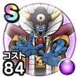

ゾーマ
ドラクエ3イベントドラクエ3ReWALKこころ最大コスト+4じゅもんダメージ+10%魔力の暴走率+5%ヒャド属性耐性+10%守備減耐性+5% / 9.0点
くわしい特徴
【ランク特殊効果】 こころ最大コスト+4じゅもんダメージ+10%ヒャド属性じゅもんダメージ+5%魔力の暴走率+7%斬撃・体技耐性+10%じゅもん耐性+10%ブレス耐性+10%ヒャド属性耐性+10%守備減耐性+10%こころ最大コスト+4じゅもんダメージ+10%魔力の暴走率+5%ヒャド属性耐性+10%守備減耐性+5%